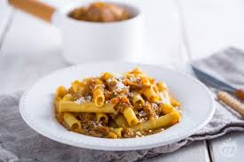
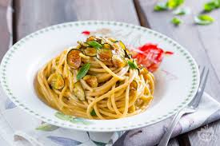
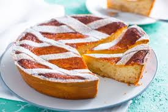

Ricette Campane

Genovese
C’è una ricetta della tradizione campana che è molto diffusa e apprezzata da tutti: porta il nome di genovese pur essendo, inverosimilmente, sconosciuta al capoluogo ligure. Si tratta di un sostanzioso ragù in bianco preparato con tantissime cipolle che durante la lunga cottura si trasformano in una deliziosa purea, molto saporita e con una spiccata nota dolce. Per questo motivo il sugo deve essere prima bilanciato attraverso l’acidità del vino
Continua a leggere

Spaghetti alla Nerano
Con la ricetta degli spaghetti alla Nerano portiamo in tavola una pietanza dai sapori campani, un primo piatto della tradizione culinaria partenopea che conquista da sempre con la sua genuina semplicità. L’origine di questa preparazione tipica è avvolta da diverse leggende, quella più diffusa e accreditata fa risalire l’idea di questa ricetta agli anni Cinquanta: pare infatti che una ristoratrice della piccola baia di Nerano per legare la pasta e zucchine
Continua a leggere

Pastiera Napoletana
Durante il periodo pasquale, in particolare il giovedì Santo, nelle cucine partenopee si assiste alla tradizionale preparazione della pastiera napoletana. Un vero e proprio rito, fatto di gesti e segreti che si tramandano di generazione in generazione. Ogni famiglia custodisce il proprio modo per preparare la frolla perfetta, per aromatizzare il ripieno al grano e ricotta (tutta pecora o metà vaccina), per lo spessore e il numero delle losanghe (o gelosie).
Continua a leggere


Genovese
C’è una ricetta della tradizione campana che è molto diffusa e apprezzata da tutti: porta il nome di genovese pur essendo, inverosimilmente, sconosciuta al capoluogo ligure. Si tratta di un sostanzioso ragù in bianco preparato con tantissime cipolle che durante la lunga cottura si trasformano in una deliziosa purea, molto saporita e con una spiccata nota dolce. Per questo motivo il sugo deve essere prima bilanciato attraverso l’acidità del vino
Continua a leggereSpaghetti alla Nerano
Con la ricetta degli spaghetti alla Nerano portiamo in tavola una pietanza dai sapori campani, un primo piatto della tradizione culinaria partenopea che conquista da sempre con la sua genuina semplicità. L’origine di questa preparazione tipica è avvolta da diverse leggende, quella più diffusa e accreditata fa risalire l’idea di questa ricetta agli anni Cinquanta: pare infatti che una ristoratrice della piccola baia di Nerano per legare la pasta e zucchine
Continua a leggerePastiera Napoletana
Durante il periodo pasquale, in particolare il giovedì Santo, nelle cucine partenopee si assiste alla tradizionale preparazione della pastiera napoletana. Un vero e proprio rito, fatto di gesti e segreti che si tramandano di generazione in generazione. Ogni famiglia custodisce il proprio modo per preparare la frolla perfetta, per aromatizzare il ripieno al grano e ricotta (tutta pecora o metà vaccina), per lo spessore e il numero delle losanghe (o gelosie).
Continua a leggere